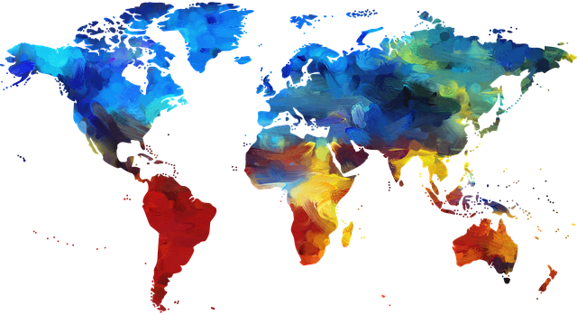

| Expected Result | If a control is labeled with only an image, the image must have alternative text which describes the function or destination of the control. |
|---|---|
| Actual Result | A server-side image map is used, but there is no text alternative for the links. |
| Solution |
|
| Example |
Server-Side Image Map |
| Why It's Important |
Blind and visually impaired users need to have a text alternative to functional images so that they can be interpreted by assistive technology such as screen readers and braille devices. Server-side image maps send the coordinates of mouse clicks to be calculated server-side, after which a link is returned. There is nothing for keyboard users to focus on, and no way to add a text alternative to the areas of the image map. |
| References |